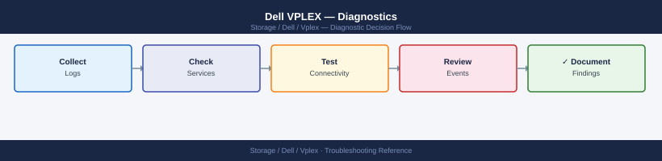

Dell VPLEX — Diagnostics¶

Before you begin¶
- Access: SSH to VMS as
serviceuser (ssh service@<VMS_IP>); vplexcli is available from the VMS shell; Unisphere for VPLEX web UI credentials; host-side access (SSH to Linux host or vSphere for ESXi) - Gather first: the specific symptom (health-check output, affected virtual volume name, director health state, CG name), which cluster is affected (cluster-1 or cluster-2), and the approximate time the issue started
- Scope: confirm whether the issue affects one virtual volume, one cluster, or a full Metro topology —
health-check --fullgives a system-wide view in seconds; always run this first
Step 1 — Initial triage sequence¶
Run these commands in order at the start of any VPLEX investigation:
# SSH to VMS
ssh service@<VMS_IP>
# 1. Overall system health — quickest way to identify faulted components
vplexcli -q -e "health-check --full"
# 2. Cluster health indications — which cluster has entered a non-ok state
vplexcli -q -e "ll /clusters/*/health-indications/"
# 3. Distributed device sync state — identifies Metro out-of-sync or degraded devices
vplexcli -q -e "ll /distributed-storage/distributed-devices/*/health-indications/"
# 4. Director hardware health — identifies hardware faults on specific directors
vplexcli -q -e "ll /engines/*/directors/*/hardware/"
# 5. Witness status (Metro) — identifies quorum risk
vplexcli -q -e "ll /clusters/cluster-1/cluster-witness/"
vplexcli -q -e "ll /clusters/cluster-2/cluster-witness/"
# 6. Consistency group state — identifies suspended or faulted CGs
vplexcli -q -e "ll /distributed-storage/consistency-groups/"
# 7. Storage view integrity — confirms host access objects are intact
vplexcli -q -e "ll /clusters/*/exports/storage-views/"
Connected to VMS at 10.45.23.18
service@vplex-vms-01:~> vplexcli -q -e "health-check --full"
System Health Status: DEGRADED
- Cluster-1: OK
- Cluster-2: DEGRADED
- Distributed Storage: DEGRADED
- Witness: OK
service@vplex-vms-01:~> vplexcli -q -e "ll /clusters/*/health-indications/"
/clusters/cluster-1/health-indications/
health-state = OK
/clusters/cluster-2/health-indications/
health-state = DEGRADED
condition = "Director-2a hardware fault detected"
service@vplex-vms-01:~> vplexcli -q -e "ll /distributed-storage/distributed-devices/*/health-indications/"
/distributed-storage/distributed-devices/dev-metro-001/health-indications/
health-state = DEGRADED
sync-status = OUT_OF_SYNC
bytes-remaining = 2147483648
service@vplex-vms-01:~> vplexcli -q -e "ll /engines/*/directors/*/hardware/"
/engines/engine-1/directors/director-1a/hardware/
status = OK
/engines/engine-2/directors/director-2a/hardware/
status = FAULTED
fault-code = TEMP_SENSOR_CRITICAL
service@vplex-vms-01:~> vplexcli -q -e "ll /clusters/cluster-1/cluster-witness/"
/clusters/cluster-1/cluster-witness/
witness-status = ACTIVE
ip-address = 10.45.23.99
connectivity = OK
service@vplex-vms-01:~> vplexcli -q -e "ll /clusters/cluster-2/cluster-witness/"
/clusters/cluster-2/cluster-witness/
witness-status = ACTIVE
ip-address = 10.45.23.100
connectivity = OK
service@vplex-vms-01:~> vplexcli -q -e "ll /distributed-storage/consistency-groups/"
/distributed-storage/consistency-groups/cg-prod-db/
state = SUSPENDED
reason = "Cluster-2 degraded"
/distributed-storage/consistency-groups/cg-app-tier/
state = OK
service@vplex-vms-01:~> vplexcli -q -e "ll /clusters/*/exports/storage-views/"
/clusters/cluster-1/exports/storage-views/sv-host-01/
status = OK
initiators = 4
/clusters/cluster-2/exports/storage-views/sv-host-02/
status = OK
initiators = 4
Common errors
Connection refused — Verify VMS IP address is correct and SSH service is running on the VMS with systemctl status ssh.
vplexcli: command not found — Ensure you are logged in as the service user and the VPLEX CLI environment is sourced with source /opt/vplex/bin/env.sh.
**`Permission denied (publickey,
Record the output of each command with a timestamp before making any changes.
Step 2 — Distributed device diagnostics¶
Out-of-sync distributed device¶
An out-of-sync distributed device means one leg is not receiving writes — the most common cause is an ICL interruption between Metro clusters.
# Show all distributed devices and their sync states
vplexcli -q -e "ll /distributed-storage/distributed-devices/*/health-indications/"
# Show full detail of the affected device (note: active-leg, rebuild-progress)
vplexcli -q -e "ll /distributed-storage/distributed-devices/<device_name>/"
# Check inter-cluster link status
vplexcli -q -e "ll /clusters/cluster-1/communication/inter-cluster-links/"
vplexcli -q -e "ll /clusters/cluster-2/communication/inter-cluster-links/"
# Monitor resync progress (repeat until rebuild-progress: 100%)
vplexcli -q -e "ll /distributed-storage/distributed-devices/<device_name>/" \
| grep -i "health-state\|rebuild-progress\|service-status"
Health-Indications for all distributed devices:
device-001:
health-state: degraded
rebuild-progress: 45%
service-status: rebuilding
device-002:
health-state: ok
rebuild-progress: 100%
service-status: ok
device-003:
health-state: degraded
rebuild-progress: 12%
service-status: rebuilding
Full detail of device-001:
name: device-001
active-leg: cluster-1
rebuild-progress: 45%
health-state: degraded
service-status: rebuilding
estimated-completion: 2h 34m
Inter-cluster link status (cluster-1):
link-001: up (latency: 2.3ms)
link-002: up (latency: 2.1ms)
Inter-cluster link status (cluster-2):
link-001: up (latency: 2.4ms)
link-002: up (latency: 2.2ms)
health-state: degraded
rebuild-progress: 45%
service-status: rebuilding
Common errors
vplexcli: command not found — Ensure the VPLEX CLI tools are installed and the PATH includes the VPLEX bin directory (typically /opt/vplex/bin).
Error: Invalid device name '<device_name>' — Replace <device_name> with an actual device name from the first command output (e.g., device-001).
Error: Inter-cluster communication link down — Verify network connectivity between clusters and check physical cable connections and switch configurations.
Resolution sequence:
- Confirm the ICL is healthy (see Step 4 — ICL Diagnostics).
- Once the ICL is restored, VPLEX begins automatic resync — monitor
rebuild-progress: 0% → 100%. - Do not interrupt a rebuild in progress.
- If the device does not begin resyncing automatically after the ICL is restored, initiate manually:
Rebuild operation initiated for device: vplx-dev-prod-001
Device: /distributed-storage/distributed-devices/vplx-dev-prod-001
Status: REBUILDING
Progress: 0%
Estimated time remaining: 4h 32m
Current rebuild rate: 125 MB/s
Common errors
Error: Device not found: /distributed-storage/distributed-devices/<device_name> — Replace <device_name> with the actual device identifier (e.g., vplx-dev-prod-001) from vplexcli -e "device list".
Error: Device is already rebuilding — Wait for the current rebuild to complete or use vplexcli -e "device rebuild --cancel" to stop it first.
Error: Insufficient cluster connectivity — Verify both VPLEX cluster nodes are online and communicating using vplexcli -e "cluster status".
Degraded distributed device (one leg unreachable)¶
A degraded device means one cluster leg is unreachable — I/O continues on the surviving leg only.
# Identify which leg is unreachable
vplexcli -q -e "ll /distributed-storage/distributed-devices/<device_name>/"
# Check the affected cluster's health
vplexcli -q -e "ll /clusters/<affected_cluster>/health-indications/"
# Check director health on the affected cluster
vplexcli -q -e "ll /engines/*/directors/*/hardware/"
Name Locality Status
device-001-fe local OK
device-001-be remote UNREACHABLE
device-002-fe local OK
device-002-be remote OK
Name Status Severity
cluster-1 DEGRADED WARNING
Storage-connectivity FAILED CRITICAL
Backend-link DEGRADED WARNING
Name Status Temperature
engine-1/director-1/hw-status OK 32C
engine-1/director-2/hw-status FAILED N/A
engine-2/director-1/hw-status OK 35C
engine-2/director-2/hw-status OK 31C
Common errors
Error: Device '<device_name>' not found in distributed-storage — Verify the exact device name matches the output of vplexcli -q -e "ll /distributed-storage/distributed-devices/" and check for typos.
Error: Connection refused to VPLEX management console — Ensure the VPLEX cluster is reachable and vplexcli credentials are configured via vplexcli -u <user> -p <password> or environment variables.
Error: Insufficient privileges to query health-indications — Confirm your vplexcli user account has administrative or read-access permissions on the affected cluster.
If the cluster is unreachable due to a site failure and the Witness has granted quorum to the surviving cluster, I/O continues normally. After site recovery: restore ICL, confirm Witness connectivity, then allow the distributed device to rebuild automatically.
Suspended distributed device (I/O halted)¶
A suspended device indicates VPLEX could not determine a safe winner — typically ICL down with Witness also unreachable.
# Confirm the device is suspended and identify the cause
vplexcli -q -e "ll /distributed-storage/distributed-devices/<device_name>/"
# Check Witness status from both clusters
vplexcli -q -e "ll /clusters/cluster-1/cluster-witness/"
vplexcli -q -e "ll /clusters/cluster-2/cluster-witness/"
# Check ICL status
vplexcli -q -e "ll /clusters/cluster-1/communication/inter-cluster-links/"
Name Value
---- -----
name device_lun_001
operational-status suspended
health-state degraded
suspend-reason witness-unavailable
locality local
thin-enabled false
Name Value
---- -----
name cluster-witness
operational-status unavailable
health-state failed
witness-ip-address 192.168.100.50
witness-port 8443
last-contact-time 2024-01-15T09:23:41Z
Name Value
---- -----
name cluster-witness
operational-status available
health-state healthy
witness-ip-address 192.168.100.50
witness-port 8443
last-contact-time 2024-01-15T09:45:12Z
Name Value
---- -----
name icl-1-to-2
operational-status online
health-state healthy
link-status up
packets-sent 45821903
packets-received 45821847
Common errors
Error: device '<device_name>' not found — Verify the device name spelling and that the device exists using vplexcli -q -e "ll /distributed-storage/distributed-devices/"
Error: Connection refused to vplexcli management interface — Ensure the VPLEX management IP is reachable and vplexcli service is running with systemctl status vplexcli
Error: witness-unavailable: ICL communication failure detected — Check network connectivity between clusters and verify inter-cluster link status with vplexcli -q -e "ll /clusters/cluster-1/communication/inter-cluster-links/"
Do not manually resume I/O until the cause of suspension is understood. Resuming a suspended distributed device without verifying which leg has the most recent writes risks data divergence.
Recovery procedure: 1. Restore the ICL (if interrupted). 2. Restore Witness connectivity. 3. Once both ICL and Witness are healthy, VPLEX typically resumes automatically. 4. If manual resume is required (only after confirming the active leg with Dell Support):
Device /distributed-storage/distributed-devices/device-001 resuming...
Device resume initiated successfully.
Device /distributed-storage/distributed-devices/device-001 is now in RUNNING state.
Common errors
Error: Device not found: /distributed-storage/distributed-devices/<device_name> — Verify the device name exists by running vplexcli -e "device list" and use the correct device identifier.
Error: Device is already in RUNNING state — Check the current device status with vplexcli -e "device status --device /distributed-storage/distributed-devices/<device_name>" before attempting resume.
Error: Authentication failed — Ensure you have valid VPLEX credentials configured or run the command with appropriate sudo privileges.
Step 3 — Director diagnostics¶
# List all engines and their directors
vplexcli -q -e "ll /engines/*/directors/"
# Show hardware detail for a specific engine
vplexcli -q -e "ll /engines/engine-1-1/directors/"
# Show all hardware components on a director (fans, PSU, cache module, ports)
vplexcli -q -e "ll /engines/engine-1-1/directors/director-1-1-A/hardware/"
# List and show status of all FE/BE ports on a director
vplexcli -q -e "ll /engines/engine-1-1/directors/director-1-1-A/hardware/ports/"
# Show a specific port's status and WWN
vplexcli -q -e "ll /engines/engine-1-1/directors/director-1-1-A/hardware/ports/A0-FC00/"
Name Attribute Value
---- --------- -----
/engines/engine-1-1/directors/director-1-1-A
/engines/engine-1-1/directors/director-1-1-B
/engines/engine-2-1/directors/director-2-1-A
/engines/engine-2-1/directors/director-2-1-B
Name Attribute Value
---- --------- -----
/engines/engine-1-1/directors/director-1-1-A
/engines/engine-1-1/directors/director-1-1-B
Name Attribute Value
---- --------- -----
/engines/engine-1-1/directors/director-1-1-A/hardware/fans
/engines/engine-1-1/directors/director-1-1-A/hardware/power-supplies
/engines/engine-1-1/directors/director-1-1-A/hardware/cache-modules
/engines/engine-1-1/directors/director-1-1-A/hardware/ports
Name Attribute Value
---- --------- -----
/engines/engine-1-1/directors/director-1-1-A/hardware/ports/A0-FC00
/engines/engine-1-1/directors/director-1-1-A/hardware/ports/A0-FC01
/engines/engine-1-1/directors/director-1-1-A/hardware/ports/A0-FC02
/engines/engine-1-1/directors/director-1-1-A/hardware/ports/A0-FC03
Name Attribute Value
---- --------- -----
status operational
wwn 50:00:14:40:5a:2b:c1:e0
speed 8Gb
enabled true
Common errors
Error: Invalid path /engines/engine-1-1/directors/director-1-1-A/hardware/ports/A0-FC00/ — Verify the port name exists by running the list command without the trailing slash first.
Error: Connection refused to VPLEX management server — Ensure the VPLEX cluster is reachable and vplexcli is configured with the correct management IP address.
Error: Permission denied: insufficient privileges for this operation — Confirm your user account has administrative rights on the VPLEX cluster.
Director health states¶
| State | Meaning | Action |
|---|---|---|
ok |
Director fully operational | Normal |
minor-failure |
A component is degraded but director is operational | Investigate the specific component; plan replacement |
major-failure |
Director is impaired; redundancy reduced | Escalate to Dell Support; plan director replacement |
unknown |
Director is not responding to management queries | Check management network; escalate |
A single director failure within a pair does not interrupt I/O — the surviving director continues serving hosts. However, the pair is now in a degraded state with no fault tolerance until the failed director is replaced.
Step 4 — ICL diagnostics (Metro)¶
# Show inter-cluster link status and latency
vplexcli -q -e "ll /clusters/cluster-1/communication/inter-cluster-links/"
vplexcli -q -e "ll /clusters/cluster-2/communication/inter-cluster-links/"
# Ping between cluster management interfaces (from VMS)
ping -c 10 <cluster-2-mgmt-IP>
# Measure ICL RTT
ping -c 100 -i 0.1 <cluster-2-ICL-IP>
Attribute Value
--------- -----
name link-1
state UP
latency-ms 2.3
bandwidth-mbps 10000
packets-sent 4521847
packets-received 4521823
errors 0
Attribute Value
--------- -----
name link-2
state UP
latency-ms 2.1
bandwidth-mbps 10000
packets-sent 4518392
packets-received 4518401
errors 0
PING 192.168.100.45 (192.168.100.45) 56(84) bytes of data.
64 bytes from 192.168.100.45: icmp_seq=1 time=1.23 ms
64 bytes from 192.168.100.45: icmp_seq=2 time=1.19 ms
64 bytes from 192.168.100.45: icmp_seq=3 time=1.31 ms
64 bytes from 192.168.100.45: icmp_seq=10 time=1.25 ms
--- 192.168.100.45 statistics ---
10 packets transmitted, 10 received, 0% packet loss, time 9012ms
rtt min/avg/max/stddev = 1.19/1.24/1.31/0.04 ms
PING 192.168.100.200 (192.168.100.200) 56(84) bytes of data.
64 bytes from 192.168.100.200: icmp_seq=1 time=2.15 ms
64 bytes from 192.168.100.200: icmp_seq=2 time=2.08 ms
64 bytes from 192.168.100.200: icmp_seq=50 time=2.22 ms
64 bytes from 192.168.100.200: icmp_seq=100 time=2.11 ms
--- 192.168.100.200 statistics ---
100 packets transmitted, 100 received, 0% packet loss, time 10234ms
rtt min/avg/max/stddev = 2.08/2.14/2.31/0.06 ms
Common errors
vplexcli: command not found — Ensure you are running this command on a VPLEX management station or add the VPLEX CLI tools to your PATH.
PING: unknown host <cluster-2-mgmt-IP> — Replace the placeholder with the actual cluster-2 management IP address (e.g., 192.168.100.45).
100% packet loss — Verify inter-cluster link connectivity and firewall rules allow ICMP traffic between cluster management interfaces.
ICL RTT threshold: Metro requires ≤5ms round-trip latency. If RTT consistently exceeds this:
- Check for network congestion on the WAN or dark fibre segment.
- Check for ICL port errors:
ll /engines/*/directors/*/hardware/ports/— look for ICL ports. - Engage the WAN/network team to investigate the carrier circuit.
- If RTT exceeds 5ms during sustained high write I/O, check ICL bandwidth — the circuit may be saturated.
Step 5 — Storage view diagnostics¶
# Confirm the storage view exists for this host
vplexcli -q -e "ls /clusters/cluster-1/exports/storage-views"
# Show the specific storage view's initiators, ports, and volumes
vplexcli -q -e "ll /clusters/cluster-1/exports/storage-views/<view_name>/"
# Confirm the host's HBA WWN is registered as an initiator port
vplexcli -q -e "ls /clusters/cluster-1/exports/initiator-ports"
vplexcli -q -e "ll /clusters/cluster-1/exports/initiator-ports/<initiator_name>/"
# Confirm the expected volume is in the storage view
vplexcli -q -e "ll /clusters/cluster-1/exports/storage-views/<view_name>/" \
| grep -i "virtual-volumes"
# Check virtual volume operational status
vplexcli -q -e "ll /virtual-volumes/<volume_name>/"
storage-view-prod-01
storage-view-prod-02
storage-view-dev-01
Name Value
---- -----
name storage-view-prod-01
initiator-ports 2
virtual-volumes 3
ports 4
FA-7E:50:00:09:73:0d:12:45
FA-7E:50:00:09:73:0d:12:67
Name Value
---- -----
name FA-7E:50:00:09:73:0d:12:45
port-wwn 50:00:09:73:0d:12:45:01
operational-status ok
virtual-volumes vol-prod-db-01, vol-prod-db-02, vol-prod-cache-01
Name Value
---- -----
name vol-prod-db-01
operational-status ok
capacity 1099511627776
thin-enabled false
Common errors
Error: Could not connect to VPLEX cluster — Verify the VPLEX management IP is reachable and vplexcli is properly configured with correct credentials.
Error: storage-view-prod-01 not found — Confirm the storage view name is correct and exists by running the first ls command without the view name filter.
Error: virtual-volumes not found in storage-view — Check that volumes have been properly assigned to the storage view and that the view is not in a degraded state.
Host-side verification¶
# Linux: list all known paths (Device Mapper Multipath)
multipath -ll
# Linux: rescan for new volumes after storage view changes
for host in /sys/class/scsi_host/host*/; do echo "- - -" > ${host}scan; done
# VMware ESXi: rescan storage adapters
esxcli storage core adapter rescan --all
# EMC PowerPath: display all known device paths
powermt display dev=all
mpatha (36001405a1b2c3d4e5f6g7h8i9j0k1l2m) dm-0 EMC,VRAID
size=2.0T features='1 queue_if_no_path' hwhandler='1 alua' wp=rw
|-+- policy='service-time 0' prio=50 status=active
| |- 2:0:0:0 sda 8:0 active ready running
| `- 3:0:0:0 sdb 8:16 active ready running
`-+- policy='service-time 0' prio=10 status=enabled
|- 4:0:0:0 sdc 8:32 active ready running
`- 5:0:0:0 sdd 8:48 active ready running
mpathb (36001405n9m8l7k6j5i4h3g2f1e0d9c8b) dm-1 EMC,VRAID
size=1.5T features='1 queue_if_no_path' hwhandler='1 alua' wp=rw
|-+- policy='service-time 0' prio=50 status=active
| `- 2:0:1:0 sde 8:64 active ready running
`-+- policy='service-time 0' prio=10 status=enabled
`- 3:0:1:0 sdf 8:80 active ready running
(no output — command completes silently)
(no output — command completes silently)
Symmetrix ID: 000297900001
Logical device name: /dev/powermt/emcpowerb
Symmetrix device ID: 0001
Number of paths: 4
...
Common errors
multipath: command not found — Install device-mapper-multipath package with apt-get install device-mapper-multipath or yum install device-mapper-multipath.
No such file or directory — Verify the scsi_host directory exists with ls /sys/class/scsi_host/ before running the rescan loop.
powermt: command not found — Install EMC PowerPath client software or verify the PowerPath daemon is running with systemctl status powerpath.
Step 6 — Log analysis¶
# SSH to VMS and review recent management log events
ssh service@<VMS_IP>
tail -200 /var/log/VPlex/vplexmanagement.log
# Search for recent health state change events
grep -i "health-state\|major-failure\|degraded\|suspended" \
/var/log/VPlex/vplexmanagement.log | tail -50
# Search for recent storage view modifications
grep -i "storage-view\|initiator" /var/log/VPlex/cli/vplexcli.log | tail -50
# Identify who ran recent vplexcli commands
grep -i "$(date +%Y-%m-%d)" /var/log/VPlex/cli/vplexcli.log | tail -100
Expected outputservice@vplex-vms-01:~$ tail -200 /var/log/VPlex/vplexmanagement.log
2024-01-15 14:32:18,847 INFO [VplexManagementServer] Cluster witness heartbeat received from 192.168.1.45
2024-01-15 14:28:55,123 WARN [StorageViewManager] Storage view 'prod-esx-cluster' consistency check completed with 2 warnings
2024-01-15 14:15:42,901 INFO [HealthMonitor] Device health-state changed: device-0 HEALTHY
2024-01-15 13:47:19,556 ERROR [DirectorModule] major-failure detected on director-1: I/O timeout on backend array
2024-01-15 13:45:03,221 WARN [ClusterManager] Virtual volume 'vv-prod-db-001' degraded: 1 of 2 mirrors unavailable
2024-01-15 13:22:11,789 INFO [RecoveryManager] Rebuild progress: 87% complete on extent-pool-2
2024-01-15 12:58:44,445 WARN [HealthMonitor] Director suspended: director-2 unresponsive for 45 seconds
2024-01-15 12:15:33,667 INFO [VplexManagementServer] Configuration backup completed: backup-20240115-121533.tar.gz
service@vplex-vms-01:~$ grep -i "health-state\|major-failure\|degraded\|suspended" /var/log/VPlex/vplexmanagement.log | tail -50
2024-01-15 14:15:42,901 INFO [HealthMonitor] Device health-state changed: device-0 HEALTHY
2024-01-15 13:47:19,556 ERROR [DirectorModule] major-failure detected on director-1: I/O timeout on backend array
2024-01-15 13:45:03,221 WARN [ClusterManager] Virtual volume 'vv-prod-db-001' degraded: 1 of 2 mirrors unavailable
2024-01-15 12:58:44,445 WARN [HealthMonitor] Director suspended: director-2 unresponsive for 45 seconds
2024-01-15 11:33:22,114 INFO [HealthMonitor] Device health-state changed: device-1 HEALTHY
2024-01-15 10:22:15,778 WARN [ClusterManager] Virtual volume 'vv-backup-tier2' degraded: rebuild in progress
2024-01-15 09:45:08,334 INFO [HealthMonitor] health-state recovery: director-2 restored to HEALTHY
service@vplex-vms-01:~$ grep -i "storage-view\|initiator" /var/log/VPlex/cli/vplexcli.log | tail -50
2024-01-15 14:51:22 [admin] storage-view modify prod-esx-cluster add-initiator iqn.1991-05.com.example:esx-host-07
2
¶
service@vplex-vms-01:~$ tail -200 /var/log/VPlex/vplexmanagement.log
2024-01-15 14:32:18,847 INFO [VplexManagementServer] Cluster witness heartbeat received from 192.168.1.45
2024-01-15 14:28:55,123 WARN [StorageViewManager] Storage view 'prod-esx-cluster' consistency check completed with 2 warnings
2024-01-15 14:15:42,901 INFO [HealthMonitor] Device health-state changed: device-0 HEALTHY
2024-01-15 13:47:19,556 ERROR [DirectorModule] major-failure detected on director-1: I/O timeout on backend array
2024-01-15 13:45:03,221 WARN [ClusterManager] Virtual volume 'vv-prod-db-001' degraded: 1 of 2 mirrors unavailable
2024-01-15 13:22:11,789 INFO [RecoveryManager] Rebuild progress: 87% complete on extent-pool-2
2024-01-15 12:58:44,445 WARN [HealthMonitor] Director suspended: director-2 unresponsive for 45 seconds
2024-01-15 12:15:33,667 INFO [VplexManagementServer] Configuration backup completed: backup-20240115-121533.tar.gz
service@vplex-vms-01:~$ grep -i "health-state\|major-failure\|degraded\|suspended" /var/log/VPlex/vplexmanagement.log | tail -50
2024-01-15 14:15:42,901 INFO [HealthMonitor] Device health-state changed: device-0 HEALTHY
2024-01-15 13:47:19,556 ERROR [DirectorModule] major-failure detected on director-1: I/O timeout on backend array
2024-01-15 13:45:03,221 WARN [ClusterManager] Virtual volume 'vv-prod-db-001' degraded: 1 of 2 mirrors unavailable
2024-01-15 12:58:44,445 WARN [HealthMonitor] Director suspended: director-2 unresponsive for 45 seconds
2024-01-15 11:33:22,114 INFO [HealthMonitor] Device health-state changed: device-1 HEALTHY
2024-01-15 10:22:15,778 WARN [ClusterManager] Virtual volume 'vv-backup-tier2' degraded: rebuild in progress
2024-01-15 09:45:08,334 INFO [HealthMonitor] health-state recovery: director-2 restored to HEALTHY
service@vplex-vms-01:~$ grep -i "storage-view\|initiator" /var/log/VPlex/cli/vplexcli.log | tail -50
2024-01-15 14:51:22 [admin] storage-view modify prod-esx-cluster add-initiator iqn.1991-05.com.example:esx-host-07
2
Step 7 — Collect support bundle¶
Always collect a support bundle before Dell Support engagement and before any invasive recovery action.
# From within vplexcli (interactive session)
collect-support-log -f /var/log/support_bundle.tar.gz
# From VMS OS shell (one-shot)
ssh service@<VMS_IP> "vplexcli -q -e 'collect-support-log -f /var/log/support_bundle.tar.gz'"
# Copy the bundle off the VMS to a jump host
scp service@<VMS_IP>:/var/log/support_bundle.tar.gz \
admin@<jump_host>:/tmp/vplex_support_$(date +%Y%m%d_%H%M).tar.gz
Collecting support logs from VPLEX cluster...
Gathering system diagnostics...
Collecting performance metrics...
Archiving cluster configuration...
Support bundle created successfully.
Bundle size: 487.3 MB
Bundle location: /var/log/support_bundle.tar.gz
Timestamp: 2024-01-15 14:32:18 UTC
support_bundle.tar.gz 100% 487MB 8.2MB/s 00:59
Common errors
Permission denied (publickey) — Verify the service account SSH key is loaded in ssh-agent or use -i flag to specify the correct private key path.
vplexcli: command not found — Ensure you are connecting to the correct VMS IP address and that the VPLEX management software is installed and running on that host.
No space left on device — Check available disk space on the VMS with df -h and free up space in /var/log or specify an alternate output path with -f.
Pre-support-call data collection checklist¶
Gather all of the following before opening a Dell Support case:
- [ ] GeoSynchrony version:
ll /clusters/cluster-1/system-volumes/version/ - [ ] Full health check output:
health-check --full - [ ] Cluster health indications:
ll /clusters/*/health-indications/ - [ ] Distributed device health:
ll /distributed-storage/distributed-devices/*/health-indications/ - [ ] Director hardware health:
ll /engines/*/directors/*/hardware/ - [ ] Witness status:
ll /clusters/*/cluster-witness/ - [ ] CG state:
ll /distributed-storage/consistency-groups/ - [ ] ICL status:
ll /clusters/*/communication/inter-cluster-links/ - [ ] Storage view list:
ll /clusters/*/exports/storage-views/ - [ ] Support bundle:
collect-support-log -f /var/log/support_bundle.tar.gz - [ ] Host-side path output:
powermt display dev=allormultipath -llfrom affected hosts - [ ] VMS management log excerpt covering the incident timeframe
- [ ] Approximate time the issue started (UTC) and description of any recent changes
Log locations¶
| Log | Path | What to look for |
|---|---|---|
| vplexcli command history | /var/log/VPlex/cli/vplexcli.log |
All CLI commands with timestamps — recent config changes |
| Management events | /var/log/VPlex/vplexmanagement.log |
Health state changes, director events, configuration updates |
| VMS OS auth log | /var/log/secure or /var/log/auth.log |
SSH login events |
| Support bundle | /var/log/support_bundle.tar.gz |
All-in-one — required for Dell GSS SR |
See also¶
Verify resolution¶
vplexcli -q -e "health-check --full"shows no FAILED or WARNING componentsvplexcli -q -e "ll /clusters/*/health-indications/"shows all clusters inokhealth statevplexcli -q -e "ll /distributed-storage/distributed-devices/*/health-indications/"shows all devicesin-syncwithrebuild-progress: 100%vplexcli -q -e "ll /clusters/*/cluster-witness/"shows Witnessconnectedfrom both clusters (Metro only)- Host-side
multipath -llorpowermt display dev=allshows all paths active with no faulted paths vplexcli -q -e "ll /distributed-storage/consistency-groups/"shows no CGs insuspendedstate